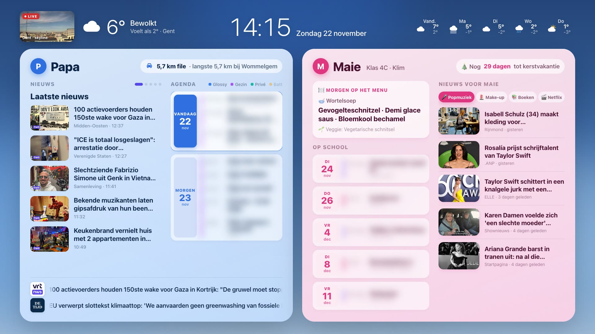
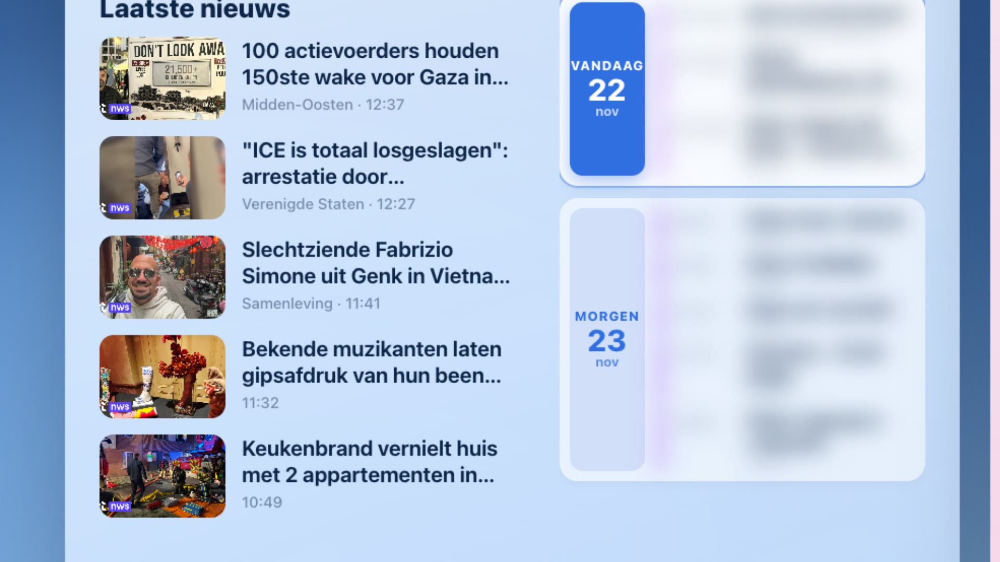
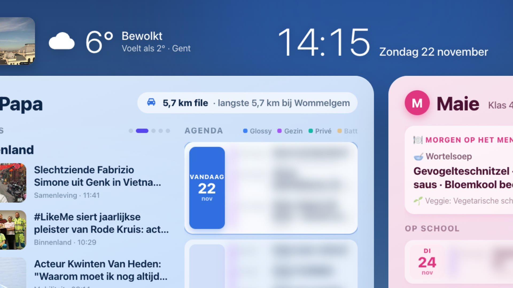

Vibe coding · november 2026
Oude tech is niet nutteloos
Een oude tv, een Apple TV uit 2015 en een eigen app die mijn dochter mee ontwierp.
Oude tech is niet nutteloos. In onze living staat een oude tv met een Apple TV HD uit 2015. Te traag voor de nieuwste apps, te goed om weg te gooien. Dus gaven we hem een nieuwe taak: een persoonlijk dashboard dat altijd aanstaat.
Eerst nadenken, dan bouwen
We begonnen niet met code, maar met een vraag: wat willen we eigenlijk zien als we 's ochtends voorbijlopen? Het antwoord was een scherm in twee. De linkerhelft, in lichtblauw, is van mij. De rechterhelft, in lichtroze, is van mijn dochter.
Het ontwerp werkten we eerst uit in de browser, als prototype met exact de afmetingen van de tv. Pas toen het uitzicht goed zat, werd het een echte tvOS-app, gebouwd met Claude Code.
Wat er op het scherm staat
Bovenaan: een live beeld van de skyline van Gent, het weer, de klok en de verwachting voor de komende vijf dagen.
Mijn helft toont nieuws van VRT NWS en Sporza, internationaal AI-nieuws, de files op de Vlaamse snelwegen en mijn agenda. Onderaan lopen de koppen van VRT NWS en De Tijd voorbij.
De helft van mijn dochter groeide uit haar eigen ideeën: het middagmenu op school, de activiteiten van haar klas, een aftelling naar de volgende vakantie en nieuws over de onderwerpen die zij leuk vindt, van popmuziek tot boeken.
Gemaakt voor een oud kastje
De Apple TV HD draait op 1080p, de app dus ook. Hij houdt de schermbeveiliging uit en schuift het beeld om de drie minuten een paar pixels op, tegen inbranden. Met een gratis Apple ID werkt een zelfgemaakte app maar zeven dagen. Een klein script op de Mac lost dat op: het kijkt om de vier uur en zet de app opnieuw op de Apple TV voor hij vervalt.
In de video is alles openbare data, behalve de agenda's en de verjaardag. Die hebben we vervaagd.
Geen app voor iedereen
Een toestel wordt niet waardeloos op het moment dat het geen nieuwe apps meer krijgt. Met een helder idee van wat je wil, bouw je iets dat precies bij je leven past. Geen app voor iedereen, maar een app voor ons.
Benieuwd wat een eigen tool voor je team of je merk kan doen? Een eerste intake is gratis.



